Email campaign is based on data in marketing lists. In order to prepare a campaign in OroCRM, you need to create a Marketing List first.
This list will create a segment on the MailChimp side. Go to Marketing > Marketing Lists > Create Marketing List.
You need to complete the following fields to create your marketing list:
| Field | Description |
|---|---|
| Name | Name used to refer to the marketing list in the system. |
| Description | Optional field. Can be filled with text to help you and other users understand the purpose of the list in future. |
| Entity | Data to be synchronized into the marketing list will depend on the entity we select. |
| Type | Type refers to the type of marketing list update. Dynamic Type means that all changes you make to your marketing list will be automatic. On Demand type means that updates will be performed manually. |
| Owner | Limits the list of users that can manage the marketing list to the users, whose roles allow managing marketing lists of the owner. |
Note
You can add multiple columns to your marketing list in OroCRM but only First Name, Last Name and Email details will be synced over to MailChimp.
Note that adding an Email column is vital to be able to send an email campaign via MailChimp.
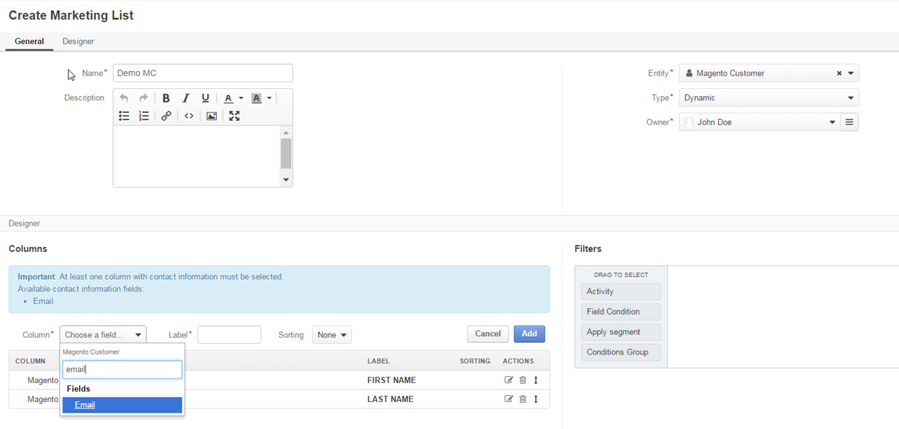Click Save and Close when you are finished.
Now it is time to create a list on the MailChimp side. Login to your MailChimp account. Click on Lists in the menu above.
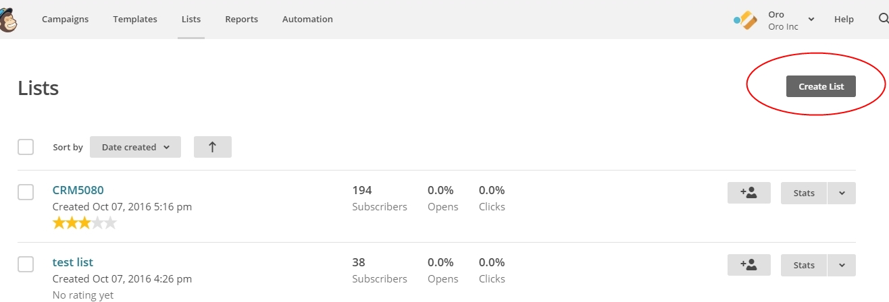A page will open with the following fields to fill in:
| Field | Description |
|---|---|
| List Name | The name of the list that will be seen by all your subscribers. |
| Default From Email Address | Enter the address people can reply to. |
| Default From Name | This will be displayed as the sender of the email, e.g. name of your company. |
| Remind People How They Signed up to Your List | Enter text message into the text field. |
| Contact Information for This List | Enter/edit your contact address information |
| Notifications | Select the notifications to be sent to your provided email
|
Once you are done, click Save at the bottom of the page. You have just created a brand new list in MailChimp.
Now, we need to upload subscribers from OroCRM into our newly created MailChimp list. In order for OroCRM to see this list, we need to:
You can map contents of OroCRM marketing list to use a segment of the Subscribers List in MailChimp. To do this:
Once you are connected, you will also notice a MailChimp button appear at the top with the following actions in the dropdown:
| Field | Description |
|---|---|
| Sync | Start sync manually |
| Connection Settings | Change connection or integration for the current marketing list in OroCRM |
| Disconnect | Disconnect the list from the segment |
At this point, if you go back to MailChimp, you will be able to see data from OroCRM (subscribers’ first and last names and contact details) synced into your MailChimp list. Other information that you may have specified when creating a list on the OroCRM side, such as dates of birth or custom details, will not be synced.
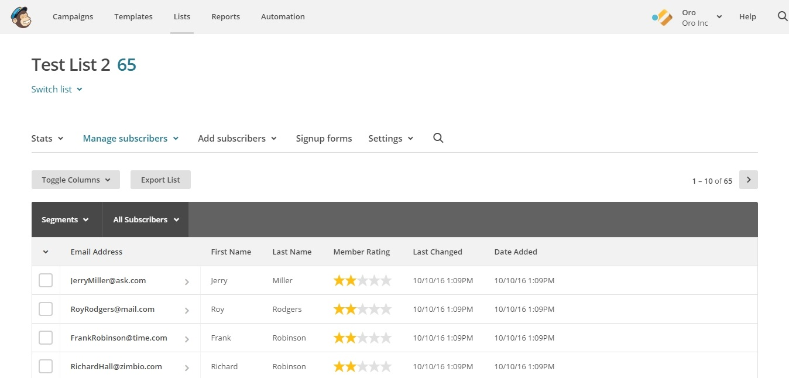Now that you have configured integration with MailChimp and created a marketing list, it is time to create and send campaign on the MailChimp side.
Once you have logged into your MailChimp account, click Create Campaign in the upper right corner.
You will be asked about the type of the campaign you would like to select. You can choose one of the following:
Note
Please note that OroCRM is unable to receive email campaigns from segments used in automation programs.
When you are done with the campaign type, choose a list to be sent out in your email campaign. Here we can select the list segment that we created before.
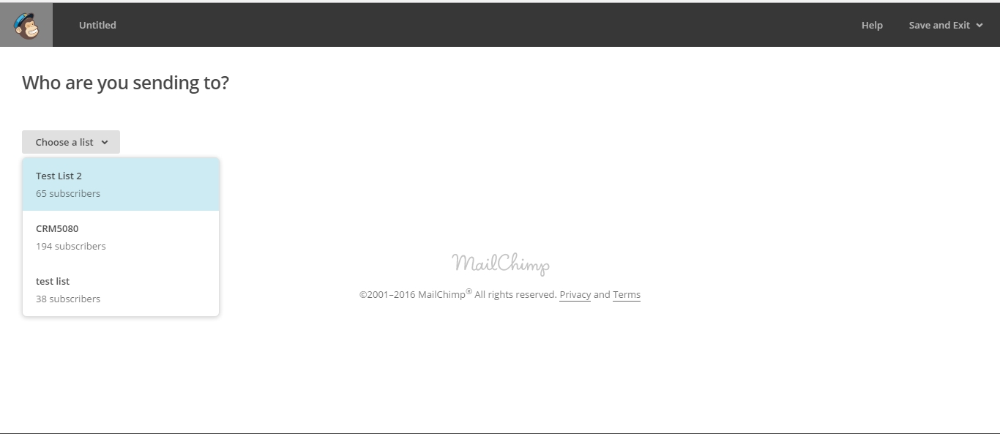When you have selected your list, go to the lower right corner and click Next. You will see the following options:
Entire list is the entire collection of contacts. In our case, however, make sure that you send your email campaign to a segment of the list, i.e. a selected number of contacts within the entire list. Otherwise, the contacts will not get synced back to OroCRM. To do that, tick Saved or pre-built segment. A list of segments, created on the OroCRM side, will appear below. Just click on the list that you would like to use. Next, press the Update Recipient Count button.
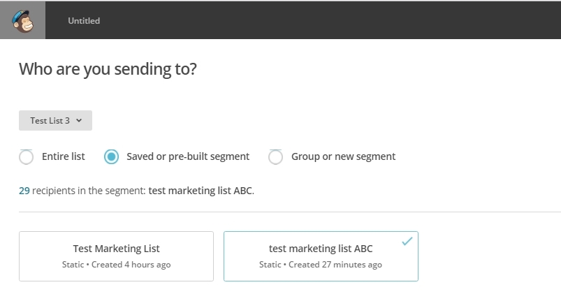Pre-Built Segments section of the same page allows you to choose contacts based on Subscriber Engagement (New Subscribers, Active Subscribers, Inactive Subscribers), or Customer Behavior and Demographics (available after connection to your store).
Click Next when you are finished. This will redirect you the next page to complete your campaign information:
Tracking Options can be found below the form. Tick the options that you find useful to you (e.g. track opens, track clicks, etc). If you wish to promote your email in social media, select Connect to Twitter or Connect to Facebook.
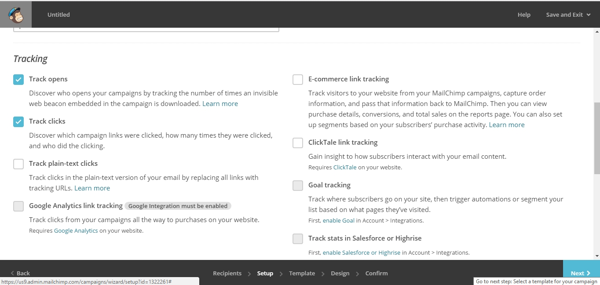To add relevance to your emails and to avoid spam filters, you can personalize emails in your campaign. To do that, check Personalize the ‘To’ field. You will be asked to include Merge Tags to your email. Merge tags are personalization options. They include the names of the subscribers you want to send your emails to. In the provided field, specify merge tags for your recipients, i.e. *|FNAME|* or *|FNAME|* *|LNAME|*.
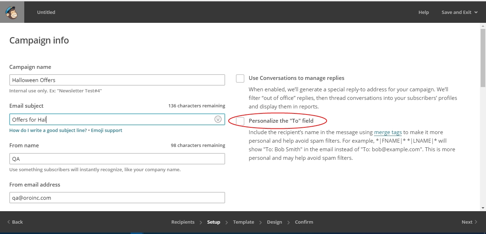Once you are done, click Next in the lower right corner. You can also click on the links at the bottom of the page, they will redirect you to the same place.
Select a template among a pre-set number of campaign templates, or create your own.
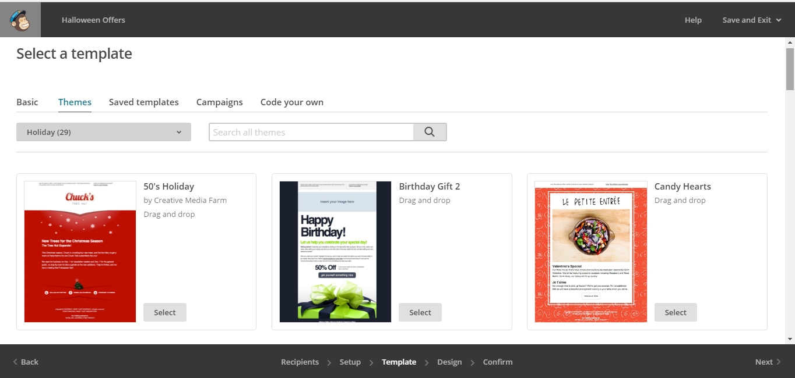When you have chosen the template that suits you best, go the next page and design your email following the instructions on the page.
To ensure that your address each of your contacts by name, select Merge Tags and First Name in the options within Content text window. This way, if you type in Hi *|FNAME|*, your subscribers will see their first name instead of their email address in the campaign they receive from you.
As soon as you are done with the text, click Confirm and review what you have done before it goes out to your subscribers.
When you have ensured that everything is correct, press Send in the lower right corner. A Prepare For Launch pop up window will appear. Press Send Now. High Fives message means that you campaign has joined the send queue.
To look at your campaign statistics on the MailChimp side, click Track Performance in Reports on the same page. To do this manually, go to Campaigns>View Report. Here, you check out subscriber activity for your newly created email campaign.
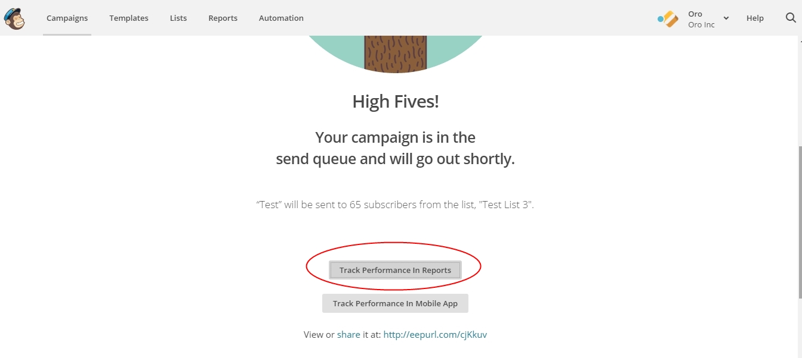 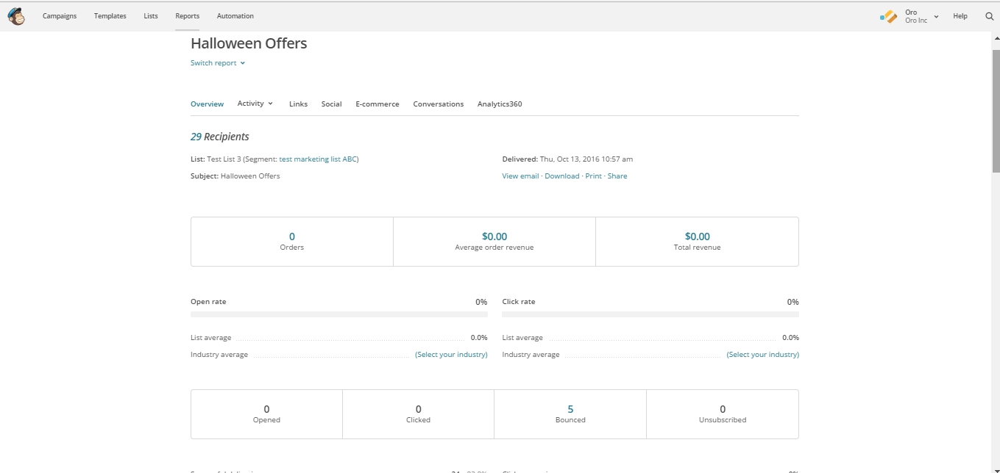Once you have sent out your email campaign in MailChimp, information about your email campaign should have been exported to OroCRM.
As soon as export has been completed, your email campaign should appear in Marketing>Email Campaigns. By clicking on your recent campaign, you will be able to see subscriber activity statistics, such as the number of clicks, bounces, opens, etc. Numbers in each column for each contact define the number of times an action has been performed, e.g. 2 opened, 1 click, 1 unsubscribe. These statistics will help you understand the outcome of your campaign and let you filter contacts for the next one.
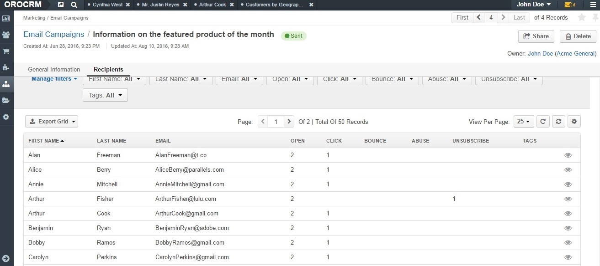Note
Please note that sometimes Mailchimp’s summary information may not match the OroCRM summary in the same report. This may happen because one set of statistics comes from Mailchimp directly. The other is generated as we receive specific reporting data back about recipients.
For instance, if you need to exclude customers who did not open your email from the next campaign, go to Marketing>Marketing List>Create New Marketing List. Fill in the mandatory fields, remembering to include at least one contact column below.
In the Filters section:
The same way you can apply any conditions of your choice.
When you are done, make sure you click Save and Close.
This list will now appear in the Marketing List page and will now contain contacts sorted according to your conditions.
Related Topics on Marketing Automation